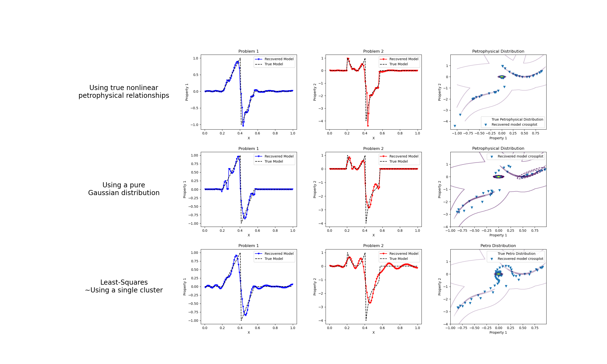

Note
Go to the end to download the full example code
Petrophysically guided inversion: Joint linear example with nonlinear relationships#
We do a comparison between the classic least-squares inversion and our formulation of a petrophysically guided inversion. We explore it through coupling two linear problems whose respective physical properties are linked by polynomial relationships that change between rock units.
SimPEG.InvProblem will set Regularization.reference_model to m0.
SimPEG.InvProblem will set Regularization.reference_model to m0.
SimPEG.InvProblem will set Regularization.reference_model to m0.
SimPEG.InvProblem is setting bfgsH0 to the inverse of the eval2Deriv.
***Done using the default solver Pardiso and no solver_opts.***
Alpha scales: [3.466585984471505, 0.0, 3.497667477042771e-06, 0.0]
Calculating the scaling parameter.
Scale Multipliers: [0.09191427 0.90808573]
<class 'SimPEG.regularization.pgi.PGIsmallness'>
Initial data misfit scales: [0.09191427 0.90808573]
model has any nan: 0
=============================== Projected GNCG ===============================
# beta phi_d phi_m f |proj(x-g)-x| LS Comment
-----------------------------------------------------------------------------
x0 has any nan: 0
0 1.91e+01 3.00e+05 0.00e+00 3.00e+05 1.41e+02 0
geophys. misfits: 1108.6 (target 30.0 [False]); 71.8 (target 30.0 [False]) | smallness misfit: 2905.8 (target: 200.0 [False])
Beta cooling evaluation: progress: [1108.6 71.8]; minimum progress targets: [240000. 240000.]
1 1.91e+01 1.67e+02 4.07e+01 9.45e+02 7.63e+01 0
geophys. misfits: 499.6 (target 30.0 [False]); 19.8 (target 30.0 [True]) | smallness misfit: 1281.3 (target: 200.0 [False])
Beta cooling evaluation: progress: [499.6 19.8]; minimum progress targets: [886.9 57.4]
Updating scaling for data misfits by 1.5173891347819866
New scales: [0.13313826 0.86686174]
2 1.91e+01 8.37e+01 3.96e+01 8.39e+02 7.36e+01 0 Skip BFGS
geophys. misfits: 293.0 (target 30.0 [False]); 19.5 (target 30.0 [True]) | smallness misfit: 1184.5 (target: 200.0 [False])
Beta cooling evaluation: progress: [293. 19.5]; minimum progress targets: [399.7 30. ]
Updating scaling for data misfits by 1.536752122169486
New scales: [0.19095447 0.80904553]
3 1.91e+01 7.17e+01 4.07e+01 8.49e+02 9.49e+01 0 Skip BFGS
geophys. misfits: 173.8 (target 30.0 [False]); 19.5 (target 30.0 [True]) | smallness misfit: 1121.1 (target: 200.0 [False])
Beta cooling evaluation: progress: [173.8 19.5]; minimum progress targets: [234.4 30. ]
Updating scaling for data misfits by 1.5353464375947468
New scales: [0.26598997 0.73401003]
4 1.91e+01 6.06e+01 4.17e+01 8.57e+02 7.38e+01 0
geophys. misfits: 108.8 (target 30.0 [False]); 19.9 (target 30.0 [True]) | smallness misfit: 1073.9 (target: 200.0 [False])
Beta cooling evaluation: progress: [108.8 19.9]; minimum progress targets: [139. 30.]
Updating scaling for data misfits by 1.5109490642271566
New scales: [0.35381169 0.64618831]
5 1.91e+01 5.13e+01 4.25e+01 8.62e+02 8.69e+01 0 Skip BFGS
geophys. misfits: 73.4 (target 30.0 [False]); 20.5 (target 30.0 [True]) | smallness misfit: 1035.6 (target: 200.0 [False])
Beta cooling evaluation: progress: [73.4 20.5]; minimum progress targets: [87. 30.]
Updating scaling for data misfits by 1.4646542757955099
New scales: [0.44504616 0.55495384]
6 1.91e+01 4.40e+01 4.30e+01 8.65e+02 8.67e+01 0 Skip BFGS
geophys. misfits: 54.2 (target 30.0 [False]); 21.5 (target 30.0 [True]) | smallness misfit: 1001.8 (target: 200.0 [False])
Beta cooling evaluation: progress: [54.2 21.5]; minimum progress targets: [58.7 30. ]
Updating scaling for data misfits by 1.3956840699268456
New scales: [0.52813967 0.47186033]
7 1.91e+01 3.88e+01 4.34e+01 8.66e+02 8.55e+01 0 Skip BFGS
geophys. misfits: 43.6 (target 30.0 [False]); 22.9 (target 30.0 [True]) | smallness misfit: 972.0 (target: 200.0 [False])
Beta cooling evaluation: progress: [43.6 22.9]; minimum progress targets: [43.4 30. ]
Decreasing beta to counter data misfit decrase plateau.
Updating scaling for data misfits by 1.3102946078733573
New scales: [0.59457953 0.40542047]
8 9.54e+00 3.52e+01 4.36e+01 4.51e+02 9.90e+01 0 Skip BFGS
geophys. misfits: 17.7 (target 30.0 [True]); 18.2 (target 30.0 [True]) | smallness misfit: 1004.9 (target: 200.0 [False])
Beta cooling evaluation: progress: [17.7 18.2]; minimum progress targets: [34.9 30. ]
Warming alpha_pgi to favor clustering: 1.6712589981766042
9 9.54e+00 1.79e+01 4.63e+01 4.59e+02 8.82e+01 0
geophys. misfits: 17.2 (target 30.0 [True]); 21.4 (target 30.0 [True]) | smallness misfit: 870.4 (target: 200.0 [False])
Beta cooling evaluation: progress: [17.2 21.4]; minimum progress targets: [30. 30.]
Warming alpha_pgi to favor clustering: 2.6347784355331556
10 9.54e+00 1.89e+01 4.79e+01 4.76e+02 8.61e+01 0
geophys. misfits: 16.3 (target 30.0 [True]); 25.3 (target 30.0 [True]) | smallness misfit: 750.1 (target: 200.0 [False])
Beta cooling evaluation: progress: [16.3 25.3]; minimum progress targets: [30. 30.]
Warming alpha_pgi to favor clustering: 3.9815728845921816
11 9.54e+00 2.00e+01 5.00e+01 4.97e+02 8.60e+01 0
geophys. misfits: 15.9 (target 30.0 [True]); 31.5 (target 30.0 [False]) | smallness misfit: 636.2 (target: 200.0 [False])
Beta cooling evaluation: progress: [15.9 31.5]; minimum progress targets: [30. 30.]
Decreasing beta to counter data misfit increase.
Updating scaling for data misfits by 1.8899966176990826
New scales: [0.43692648 0.56307352]
12 4.77e+00 2.47e+01 4.96e+01 2.61e+02 9.34e+01 0
geophys. misfits: 11.5 (target 30.0 [True]); 18.7 (target 30.0 [True]) | smallness misfit: 698.8 (target: 200.0 [False])
Beta cooling evaluation: progress: [11.5 18.7]; minimum progress targets: [30. 30.]
Warming alpha_pgi to favor clustering: 8.368435045223471
13 4.77e+00 1.56e+01 5.75e+01 2.90e+02 8.85e+01 0
geophys. misfits: 11.9 (target 30.0 [True]); 23.5 (target 30.0 [True]) | smallness misfit: 526.0 (target: 200.0 [False])
Beta cooling evaluation: progress: [11.9 23.5]; minimum progress targets: [30. 30.]
Warming alpha_pgi to favor clustering: 15.854028262629544
14 4.77e+00 1.84e+01 6.49e+01 3.28e+02 1.04e+02 0
geophys. misfits: 11.5 (target 30.0 [True]); 19.5 (target 30.0 [True]) | smallness misfit: 452.4 (target: 200.0 [False])
Beta cooling evaluation: progress: [11.5 19.5]; minimum progress targets: [30. 30.]
Warming alpha_pgi to favor clustering: 32.93835366597988
15 4.77e+00 1.60e+01 8.18e+01 4.06e+02 1.16e+02 0
geophys. misfits: 12.9 (target 30.0 [True]); 20.5 (target 30.0 [True]) | smallness misfit: 293.1 (target: 200.0 [False])
Beta cooling evaluation: progress: [12.9 20.5]; minimum progress targets: [30. 30.]
Warming alpha_pgi to favor clustering: 62.42247017159281
16 4.77e+00 1.72e+01 9.63e+01 4.77e+02 1.27e+02 0
geophys. misfits: 20.8 (target 30.0 [True]); 32.2 (target 30.0 [False]) | smallness misfit: 215.2 (target: 200.0 [False])
Beta cooling evaluation: progress: [20.8 32.2]; minimum progress targets: [30. 30.]
Decreasing beta to counter data misfit increase.
Updating scaling for data misfits by 1.4397832224494245
New scales: [0.35020509 0.64979491]
17 2.39e+00 2.82e+01 8.90e+01 2.41e+02 1.18e+02 0
geophys. misfits: 14.6 (target 30.0 [True]); 21.9 (target 30.0 [True]) | smallness misfit: 201.5 (target: 200.0 [False])
Beta cooling evaluation: progress: [14.6 21.9]; minimum progress targets: [30. 30.]
Warming alpha_pgi to favor clustering: 106.656980617714
18 2.39e+00 1.94e+01 1.11e+02 2.85e+02 1.15e+02 0
geophys. misfits: 15.8 (target 30.0 [True]); 20.7 (target 30.0 [True]) | smallness misfit: 185.3 (target: 200.0 [True])
All targets have been reached
Beta cooling evaluation: progress: [15.8 20.7]; minimum progress targets: [30. 30.]
Warming alpha_pgi to favor clustering: 178.29671643281185
------------------------- STOP! -------------------------
1 : |fc-fOld| = 0.0000e+00 <= tolF*(1+|f0|) = 3.0000e+04
0 : |xc-x_last| = 2.9410e-01 <= tolX*(1+|x0|) = 1.0000e-06
0 : |proj(x-g)-x| = 1.1497e+02 <= tolG = 1.0000e-01
0 : |proj(x-g)-x| = 1.1497e+02 <= 1e3*eps = 1.0000e-02
0 : maxIter = 50 <= iter = 19
------------------------- DONE! -------------------------
SimPEG.InvProblem will set Regularization.reference_model to m0.
SimPEG.InvProblem will set Regularization.reference_model to m0.
SimPEG.InvProblem will set Regularization.reference_model to m0.
SimPEG.InvProblem is setting bfgsH0 to the inverse of the eval2Deriv.
***Done using the default solver Pardiso and no solver_opts.***
Alpha scales: [0.00034499025026179766, 0.0, 3.7949084087632494e-06, 0.0]
Calculating the scaling parameter.
Scale Multipliers: [0.09191427 0.90808573]
<class 'SimPEG.regularization.pgi.PGIsmallness'>
Initial data misfit scales: [0.09191427 0.90808573]
model has any nan: 0
=============================== Projected GNCG ===============================
# beta phi_d phi_m f |proj(x-g)-x| LS Comment
-----------------------------------------------------------------------------
x0 has any nan: 0
0 1.90e+03 3.00e+05 0.00e+00 3.00e+05 1.41e+02 0
geophys. misfits: 89418.3 (target 30.0 [False]); 61249.0 (target 30.0 [False]) | smallness misfit: 273.5 (target: 200.0 [False])
Beta cooling evaluation: progress: [89418.3 61249. ]; minimum progress targets: [240000. 240000.]
1 1.90e+03 6.38e+04 6.59e-01 6.51e+04 9.27e+01 0
geophys. misfits: 660.6 (target 30.0 [False]); 20.8 (target 30.0 [True]) | smallness misfit: 96.3 (target: 200.0 [True])
Beta cooling evaluation: progress: [660.6 20.8]; minimum progress targets: [71534.7 48999.2]
Updating scaling for data misfits by 1.4440309392970496
New scales: [0.1275225 0.8724775]
2 1.90e+03 1.02e+02 2.61e-01 5.99e+02 1.07e+02 0 Skip BFGS
geophys. misfits: 75.6 (target 30.0 [False]); 21.2 (target 30.0 [True]) | smallness misfit: 47.3 (target: 200.0 [True])
Beta cooling evaluation: progress: [75.6 21.2]; minimum progress targets: [528.5 30. ]
Updating scaling for data misfits by 1.4134616115630425
New scales: [0.17122045 0.82877955]
3 1.90e+03 3.05e+01 1.32e-01 2.81e+02 7.52e+01 0 Skip BFGS
geophys. misfits: 48.2 (target 30.0 [False]); 18.8 (target 30.0 [True]) | smallness misfit: 51.4 (target: 200.0 [True])
Beta cooling evaluation: progress: [48.2 18.8]; minimum progress targets: [60.5 30. ]
Updating scaling for data misfits by 1.5926883887561265
New scales: [0.24757665 0.75242335]
4 1.90e+03 2.61e+01 1.43e-01 2.97e+02 8.46e+01 0
geophys. misfits: 29.2 (target 30.0 [True]); 19.7 (target 30.0 [True]) | smallness misfit: 47.6 (target: 200.0 [True])
All targets have been reached
Beta cooling evaluation: progress: [29.2 19.7]; minimum progress targets: [38.6 30. ]
Warming alpha_pgi to favor clustering: 1.2740939895208252
------------------------- STOP! -------------------------
1 : |fc-fOld| = 0.0000e+00 <= tolF*(1+|f0|) = 3.0000e+04
0 : |xc-x_last| = 1.1642e-01 <= tolX*(1+|x0|) = 1.0000e-06
0 : |proj(x-g)-x| = 8.4547e+01 <= tolG = 1.0000e-01
0 : |proj(x-g)-x| = 8.4547e+01 <= 1e3*eps = 1.0000e-02
0 : maxIter = 50 <= iter = 5
------------------------- DONE! -------------------------
SimPEG.InvProblem will set Regularization.reference_model to m0.
SimPEG.InvProblem will set Regularization.reference_model to m0.
SimPEG.InvProblem is setting bfgsH0 to the inverse of the eval2Deriv.
***Done using the default solver Pardiso and no solver_opts.***
Alpha scales: [3.5188574849327586e-05, 0.0, 3.4826374354602616e-05, 0.0]
Calculating the scaling parameter.
Scale Multipliers: [0.09191427 0.90808573]
/home/ssoler/git/simpeg/SimPEG/directives/directives.py:332: UserWarning:
There is no PGI regularization. Smallness target is turned off (TriggerSmall flag)
Initial data misfit scales: [0.09191427 0.90808573]
model has any nan: 0
=============================== Projected GNCG ===============================
# beta phi_d phi_m f |proj(x-g)-x| LS Comment
-----------------------------------------------------------------------------
x0 has any nan: 0
0 1.03e+06 3.00e+05 0.00e+00 3.00e+05 1.41e+02 0
geophys. misfits: 57766.9 (target 30.0 [False]); 35035.0 (target 30.0 [False])
1 2.06e+05 3.71e+04 4.29e-02 4.60e+04 1.38e+02 0
geophys. misfits: 8726.7 (target 30.0 [False]); 3737.9 (target 30.0 [False])
2 4.12e+04 4.20e+03 1.06e-01 8.58e+03 1.31e+02 0 Skip BFGS
geophys. misfits: 581.3 (target 30.0 [False]); 238.8 (target 30.0 [False])
3 8.25e+03 2.70e+02 1.40e-01 1.42e+03 1.01e+02 0 Skip BFGS
geophys. misfits: 36.4 (target 30.0 [False]); 28.5 (target 30.0 [True])
Updating scaling for data misfits by 1.0522261146472824
New scales: [0.09625255 0.90374745]
4 1.65e+03 2.93e+01 1.50e-01 2.77e+02 9.05e+01 0 Skip BFGS
geophys. misfits: 8.9 (target 30.0 [True]); 14.1 (target 30.0 [True])
All targets have been reached
------------------------- STOP! -------------------------
1 : |fc-fOld| = 0.0000e+00 <= tolF*(1+|f0|) = 3.0000e+04
0 : |xc-x_last| = 4.0993e-01 <= tolX*(1+|x0|) = 1.0000e-06
0 : |proj(x-g)-x| = 9.0503e+01 <= tolG = 1.0000e-01
0 : |proj(x-g)-x| = 9.0503e+01 <= 1e3*eps = 1.0000e-02
0 : maxIter = 50 <= iter = 5
------------------------- DONE! -------------------------
/home/ssoler/git/simpeg/examples/10-pgi/plot_inv_1_PGI_Linear_1D_joint_WithRelationships.py:301: UserWarning:
marker is redundantly defined by the 'marker' keyword argument and the fmt string "b.-" (-> marker='.'). The keyword argument will take precedence.
/home/ssoler/git/simpeg/examples/10-pgi/plot_inv_1_PGI_Linear_1D_joint_WithRelationships.py:308: UserWarning:
marker is redundantly defined by the 'marker' keyword argument and the fmt string "r.-" (-> marker='.'). The keyword argument will take precedence.
/home/ssoler/git/simpeg/examples/10-pgi/plot_inv_1_PGI_Linear_1D_joint_WithRelationships.py:346: UserWarning:
marker is redundantly defined by the 'marker' keyword argument and the fmt string "b.-" (-> marker='.'). The keyword argument will take precedence.
/home/ssoler/git/simpeg/examples/10-pgi/plot_inv_1_PGI_Linear_1D_joint_WithRelationships.py:353: UserWarning:
marker is redundantly defined by the 'marker' keyword argument and the fmt string "r.-" (-> marker='.'). The keyword argument will take precedence.
/home/ssoler/git/simpeg/examples/10-pgi/plot_inv_1_PGI_Linear_1D_joint_WithRelationships.py:360: UserWarning:
The following kwargs were not used by contour: 'label'
/home/ssoler/git/simpeg/examples/10-pgi/plot_inv_1_PGI_Linear_1D_joint_WithRelationships.py:368: UserWarning:
The following kwargs were not used by contour: 'label'
/home/ssoler/git/simpeg/examples/10-pgi/plot_inv_1_PGI_Linear_1D_joint_WithRelationships.py:402: UserWarning:
marker is redundantly defined by the 'marker' keyword argument and the fmt string "b.-" (-> marker='.'). The keyword argument will take precedence.
/home/ssoler/git/simpeg/examples/10-pgi/plot_inv_1_PGI_Linear_1D_joint_WithRelationships.py:409: UserWarning:
marker is redundantly defined by the 'marker' keyword argument and the fmt string "r.-" (-> marker='.'). The keyword argument will take precedence.
import discretize as Mesh
import matplotlib.pyplot as plt
import numpy as np
from SimPEG import (
data_misfit,
directives,
inverse_problem,
inversion,
maps,
optimization,
regularization,
simulation,
utils,
)
# Random seed for reproductibility
np.random.seed(1)
# Mesh
N = 100
mesh = Mesh.TensorMesh([N])
# Survey design parameters
nk = 30
jk = np.linspace(1.0, 59.0, nk)
p = -0.25
q = 0.25
# Physics
def g(k):
return np.exp(p * jk[k] * mesh.cell_centers_x) * np.cos(
np.pi * q * jk[k] * mesh.cell_centers_x
)
G = np.empty((nk, mesh.nC))
for i in range(nk):
G[i, :] = g(i)
m0 = np.zeros(mesh.nC)
m0[20:41] = np.linspace(0.0, 1.0, 21)
m0[41:57] = np.linspace(-1, 0.0, 16)
poly0 = maps.PolynomialPetroClusterMap(coeffyx=np.r_[0.0, -4.0, 4.0])
poly1 = maps.PolynomialPetroClusterMap(coeffyx=np.r_[-0.0, 3.0, 6.0, 6.0])
poly0_inverse = maps.PolynomialPetroClusterMap(coeffyx=-np.r_[0.0, -4.0, 4.0])
poly1_inverse = maps.PolynomialPetroClusterMap(coeffyx=-np.r_[0.0, 3.0, 6.0, 6.0])
cluster_mapping = [maps.IdentityMap(), poly0_inverse, poly1_inverse]
m1 = np.zeros(100)
m1[20:41] = 1.0 + (poly0 * np.vstack([m0[20:41], m1[20:41]]).T)[:, 1]
m1[41:57] = -1.0 + (poly1 * np.vstack([m0[41:57], m1[41:57]]).T)[:, 1]
model2d = np.vstack([m0, m1]).T
m = utils.mkvc(model2d)
clfmapping = utils.GaussianMixtureWithNonlinearRelationships(
mesh=mesh,
n_components=3,
covariance_type="full",
tol=1e-8,
reg_covar=1e-3,
max_iter=1000,
n_init=100,
init_params="kmeans",
random_state=None,
warm_start=False,
means_init=np.array(
[
[0, 0],
[m0[20:41].mean(), m1[20:41].mean()],
[m0[41:57].mean(), m1[41:57].mean()],
]
),
verbose=0,
verbose_interval=10,
cluster_mapping=cluster_mapping,
)
clfmapping = clfmapping.fit(model2d)
clfnomapping = utils.WeightedGaussianMixture(
mesh=mesh,
n_components=3,
covariance_type="full",
tol=1e-8,
reg_covar=1e-3,
max_iter=1000,
n_init=100,
init_params="kmeans",
random_state=None,
warm_start=False,
verbose=0,
verbose_interval=10,
)
clfnomapping = clfnomapping.fit(model2d)
wires = maps.Wires(("m1", mesh.nC), ("m2", mesh.nC))
relatrive_error = 0.01
noise_floor = 0.0
prob1 = simulation.LinearSimulation(mesh, G=G, model_map=wires.m1)
survey1 = prob1.make_synthetic_data(
m, relative_error=relatrive_error, noise_floor=noise_floor, add_noise=True
)
prob2 = simulation.LinearSimulation(mesh, G=G, model_map=wires.m2)
survey2 = prob2.make_synthetic_data(
m, relative_error=relatrive_error, noise_floor=noise_floor, add_noise=True
)
dmis1 = data_misfit.L2DataMisfit(simulation=prob1, data=survey1)
dmis2 = data_misfit.L2DataMisfit(simulation=prob2, data=survey2)
dmis = dmis1 + dmis2
minit = np.zeros_like(m)
# Distance weighting
wr1 = np.sum(prob1.G**2.0, axis=0) ** 0.5 / mesh.cell_volumes
wr1 = wr1 / np.max(wr1)
wr2 = np.sum(prob2.G**2.0, axis=0) ** 0.5 / mesh.cell_volumes
wr2 = wr2 / np.max(wr2)
reg_simple = regularization.PGI(
mesh=mesh,
gmmref=clfmapping,
gmm=clfmapping,
approx_gradient=True,
wiresmap=wires,
non_linear_relationships=True,
weights_list=[wr1, wr2],
)
opt = optimization.ProjectedGNCG(
maxIter=50,
tolX=1e-6,
maxIterCG=100,
tolCG=1e-3,
lower=-10,
upper=10,
)
invProb = inverse_problem.BaseInvProblem(dmis, reg_simple, opt)
# directives
scales = directives.ScalingMultipleDataMisfits_ByEig(
chi0_ratio=np.r_[1.0, 1.0], verbose=True, n_pw_iter=10
)
scaling_schedule = directives.JointScalingSchedule(verbose=True)
alpha0_ratio = np.r_[1e6, 1e4, 1, 1]
alphas = directives.AlphasSmoothEstimate_ByEig(
alpha0_ratio=alpha0_ratio, n_pw_iter=10, verbose=True
)
beta = directives.BetaEstimate_ByEig(beta0_ratio=1e-5, n_pw_iter=10)
betaIt = directives.PGI_BetaAlphaSchedule(
verbose=True,
coolingFactor=2.0,
progress=0.2,
)
targets = directives.MultiTargetMisfits(verbose=True)
petrodir = directives.PGI_UpdateParameters(update_gmm=False)
# Setup Inversion
inv = inversion.BaseInversion(
invProb,
directiveList=[alphas, scales, beta, petrodir, targets, betaIt, scaling_schedule],
)
mcluster_map = inv.run(minit)
# Inversion with no nonlinear mapping
reg_simple_no_map = regularization.PGI(
mesh=mesh,
gmmref=clfnomapping,
gmm=clfnomapping,
approx_gradient=True,
wiresmap=wires,
non_linear_relationships=False,
weights_list=[wr1, wr2],
)
opt = optimization.ProjectedGNCG(
maxIter=50,
tolX=1e-6,
maxIterCG=100,
tolCG=1e-3,
lower=-10,
upper=10,
)
invProb = inverse_problem.BaseInvProblem(dmis, reg_simple_no_map, opt)
# directives
scales = directives.ScalingMultipleDataMisfits_ByEig(
chi0_ratio=np.r_[1.0, 1.0], verbose=True, n_pw_iter=10
)
scaling_schedule = directives.JointScalingSchedule(verbose=True)
alpha0_ratio = np.r_[100.0 * np.ones(2), 1, 1]
alphas = directives.AlphasSmoothEstimate_ByEig(
alpha0_ratio=alpha0_ratio, n_pw_iter=10, verbose=True
)
beta = directives.BetaEstimate_ByEig(beta0_ratio=1e-5, n_pw_iter=10)
betaIt = directives.PGI_BetaAlphaSchedule(
verbose=True,
coolingFactor=2.0,
progress=0.2,
)
targets = directives.MultiTargetMisfits(
chiSmall=1.0, TriggerSmall=True, TriggerTheta=False, verbose=True
)
petrodir = directives.PGI_UpdateParameters(update_gmm=False)
# Setup Inversion
inv = inversion.BaseInversion(
invProb,
directiveList=[alphas, scales, beta, petrodir, targets, betaIt, scaling_schedule],
)
mcluster_no_map = inv.run(minit)
# WeightedLeastSquares Inversion
reg1 = regularization.WeightedLeastSquares(
mesh, alpha_s=1.0, alpha_x=1.0, mapping=wires.m1, weights={"cell_weights": wr1}
)
reg2 = regularization.WeightedLeastSquares(
mesh, alpha_s=1.0, alpha_x=1.0, mapping=wires.m2, weights={"cell_weights": wr2}
)
reg = reg1 + reg2
opt = optimization.ProjectedGNCG(
maxIter=50,
tolX=1e-6,
maxIterCG=100,
tolCG=1e-3,
lower=-10,
upper=10,
)
invProb = inverse_problem.BaseInvProblem(dmis, reg, opt)
# directives
alpha0_ratio = np.r_[1, 1, 1, 1]
alphas = directives.AlphasSmoothEstimate_ByEig(
alpha0_ratio=alpha0_ratio, n_pw_iter=10, verbose=True
)
scales = directives.ScalingMultipleDataMisfits_ByEig(
chi0_ratio=np.r_[1.0, 1.0], verbose=True, n_pw_iter=10
)
scaling_schedule = directives.JointScalingSchedule(verbose=True)
beta = directives.BetaEstimate_ByEig(beta0_ratio=1e-5, n_pw_iter=10)
beta_schedule = directives.BetaSchedule(coolingFactor=5.0, coolingRate=1)
targets = directives.MultiTargetMisfits(
TriggerSmall=False,
verbose=True,
)
# Setup Inversion
inv = inversion.BaseInversion(
invProb,
directiveList=[alphas, scales, beta, targets, beta_schedule, scaling_schedule],
)
mtik = inv.run(minit)
# Final Plot
fig, axes = plt.subplots(3, 4, figsize=(25, 15))
axes = axes.reshape(12)
left, width = 0.25, 0.5
bottom, height = 0.25, 0.5
right = left + width
top = bottom + height
axes[0].set_axis_off()
axes[0].text(
0.5 * (left + right),
0.5 * (bottom + top),
("Using true nonlinear\npetrophysical relationships"),
horizontalalignment="center",
verticalalignment="center",
fontsize=20,
color="black",
transform=axes[0].transAxes,
)
axes[1].plot(mesh.cell_centers_x, wires.m1 * mcluster_map, "b.-", ms=5, marker="v")
axes[1].plot(mesh.cell_centers_x, wires.m1 * m, "k--")
axes[1].set_title("Problem 1")
axes[1].legend(["Recovered Model", "True Model"], loc=1)
axes[1].set_xlabel("X")
axes[1].set_ylabel("Property 1")
axes[2].plot(mesh.cell_centers_x, wires.m2 * mcluster_map, "r.-", ms=5, marker="v")
axes[2].plot(mesh.cell_centers_x, wires.m2 * m, "k--")
axes[2].set_title("Problem 2")
axes[2].legend(["Recovered Model", "True Model"], loc=1)
axes[2].set_xlabel("X")
axes[2].set_ylabel("Property 2")
x, y = np.mgrid[-1:1:0.01, -4:2:0.01]
pos = np.empty(x.shape + (2,))
pos[:, :, 0] = x
pos[:, :, 1] = y
CS = axes[3].contour(
x,
y,
np.exp(clfmapping.score_samples(pos.reshape(-1, 2)).reshape(x.shape)),
100,
alpha=0.25,
cmap="viridis",
)
axes[3].scatter(wires.m1 * mcluster_map, wires.m2 * mcluster_map, marker="v")
axes[3].set_title("Petrophysical Distribution")
CS.collections[0].set_label("")
axes[3].legend(["True Petrophysical Distribution", "Recovered model crossplot"])
axes[3].set_xlabel("Property 1")
axes[3].set_ylabel("Property 2")
axes[4].set_axis_off()
axes[4].text(
0.5 * (left + right),
0.5 * (bottom + top),
("Using a pure\nGaussian distribution"),
horizontalalignment="center",
verticalalignment="center",
fontsize=20,
color="black",
transform=axes[4].transAxes,
)
axes[5].plot(mesh.cell_centers_x, wires.m1 * mcluster_no_map, "b.-", ms=5, marker="v")
axes[5].plot(mesh.cell_centers_x, wires.m1 * m, "k--")
axes[5].set_title("Problem 1")
axes[5].legend(["Recovered Model", "True Model"], loc=1)
axes[5].set_xlabel("X")
axes[5].set_ylabel("Property 1")
axes[6].plot(mesh.cell_centers_x, wires.m2 * mcluster_no_map, "r.-", ms=5, marker="v")
axes[6].plot(mesh.cell_centers_x, wires.m2 * m, "k--")
axes[6].set_title("Problem 2")
axes[6].legend(["Recovered Model", "True Model"], loc=1)
axes[6].set_xlabel("X")
axes[6].set_ylabel("Property 2")
CSF = axes[7].contour(
x,
y,
np.exp(clfmapping.score_samples(pos.reshape(-1, 2)).reshape(x.shape)),
100,
alpha=0.5,
label="True Petro. Distribution",
)
CS = axes[7].contour(
x,
y,
np.exp(clfnomapping.score_samples(pos.reshape(-1, 2)).reshape(x.shape)),
500,
cmap="viridis",
linestyles="--",
label="Modeled Petro. Distribution",
)
axes[7].scatter(
wires.m1 * mcluster_no_map,
wires.m2 * mcluster_no_map,
marker="v",
label="Recovered model crossplot",
)
axes[7].set_title("Petrophysical Distribution")
axes[7].legend()
axes[7].set_xlabel("Property 1")
axes[7].set_ylabel("Property 2")
# Tikonov
axes[8].set_axis_off()
axes[8].text(
0.5 * (left + right),
0.5 * (bottom + top),
("Least-Squares\n~Using a single cluster"),
horizontalalignment="center",
verticalalignment="center",
fontsize=20,
color="black",
transform=axes[8].transAxes,
)
axes[9].plot(mesh.cell_centers_x, wires.m1 * mtik, "b.-", ms=5, marker="v")
axes[9].plot(mesh.cell_centers_x, wires.m1 * m, "k--")
axes[9].set_title("Problem 1")
axes[9].legend(["Recovered Model", "True Model"], loc=1)
axes[9].set_xlabel("X")
axes[9].set_ylabel("Property 1")
axes[10].plot(mesh.cell_centers_x, wires.m2 * mtik, "r.-", ms=5, marker="v")
axes[10].plot(mesh.cell_centers_x, wires.m2 * m, "k--")
axes[10].set_title("Problem 2")
axes[10].legend(["Recovered Model", "True Model"], loc=1)
axes[10].set_xlabel("X")
axes[10].set_ylabel("Property 2")
CS = axes[11].contour(
x,
y,
np.exp(clfmapping.score_samples(pos.reshape(-1, 2)).reshape(x.shape)),
100,
alpha=0.25,
cmap="viridis",
)
axes[11].scatter(wires.m1 * mtik, wires.m2 * mtik, marker="v")
axes[11].set_title("Petro Distribution")
CS.collections[0].set_label("")
axes[11].legend(["True Petro Distribution", "Recovered model crossplot"])
axes[11].set_xlabel("Property 1")
axes[11].set_ylabel("Property 2")
plt.subplots_adjust(wspace=0.3, hspace=0.3, top=0.85)
plt.show()
Total running time of the script: (0 minutes 28.867 seconds)
Estimated memory usage: 10 MB